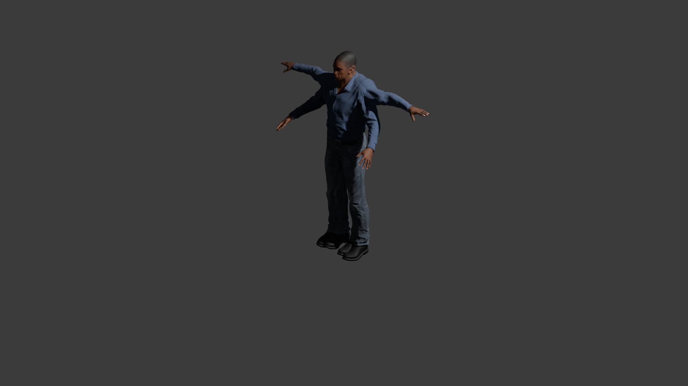
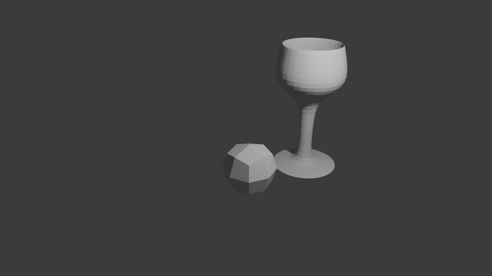

This avatar was my first attempt at character modeling in Blender, created to learn texturing and rigging basics. This avatar was created for a VR-TSST project. This image shows my avatar in his orignal position and his riggedt T-pose position.

A beginner project where I modeled a simple wineglass to practice working with Blender’s modifiers and keyboard shortcuts.